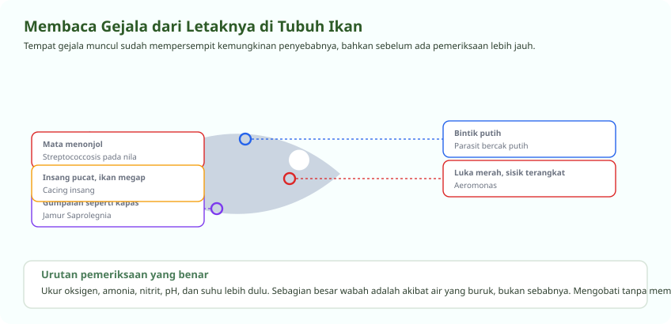

Periksa Airnya Dulu, Baru Cari Penyakitnya
Sebagian besar wabah adalah akibat, bukan sebab
Bakteri dan parasit penyebab penyakit hampir selalu sudah ada di dalam kolam sepanjang waktu. Ikan yang sehat sanggup menahannya. Yang membuat mereka menyerang adalah ikan yang lebih dulu tertekan oleh oksigen rendah, amonia tinggi, suhu yang bergoyang, atau penanganan yang kasar.
Karena itu urutan pemeriksaan selalu sama. Ukur oksigen, amonia, nitrit, pH, dan suhu lebih dulu. Baru setelah semuanya normal, masuk akal mencari penyebab biologisnya.

Mengenali Penyakit yang Paling Sering Muncul
Gejala, penyebab, dan yang memicunya
| Penyakit | Gejala yang terlihat | Penyebab | Pemicu tersering |
|---|---|---|---|
| Bercak putih (white spot) | Bintik putih seperti butiran garam di tubuh dan sirip, ikan menggosok badan | Parasit Ichthyophthirius | Suhu turun mendadak, air dingin berkepanjangan |
| Aeromonas (borok merah) | Luka merah, sisik terangkat, perut membengkak berisi cairan | Bakteri Aeromonas hydrophila | Luka akibat sortir, air kotor, padat tebar berlebih |
| Streptococcosis pada nila | Mata menonjol keluar, berenang berputar, tubuh melengkung | Bakteri Streptococcus agalactiae | Suhu air tinggi di atas 30 derajat, padat tebar tinggi |
| Jamur (saprolegniasis) | Gumpalan seperti kapas putih pada luka, sirip, atau telur | Jamur Saprolegnia | Luka terbuka, lendir terkelupas, suhu rendah |
| Trichodina | Lendir berlebihan, warna tubuh kusam, ikan lesu dan menggosok badan | Parasit Trichodina | Bahan organik menumpuk, air jarang disifon |
| Cacing insang | Insang pucat atau bengkak, ikan megap padahal oksigen cukup | Dactylogyrus dan Gyrodactylus | Padat tebar tinggi, benih terbawa dari pembenih |
| Kutu ikan (argulus) | Bintik cokelat kehijauan yang bergerak menempel di tubuh | Parasit Argulus | Air masuk dari sumber terbuka tanpa disaring |
Penanganan dan Dosisnya
Angka yang harus dipakai dengan hati-hati
| Bahan | Takaran | Cara dan lama | Untuk mengatasi |
|---|---|---|---|
| Garam krosok | 5 sampai 10 gram per liter | Perendaman lama di kolam karantina | Pemulihan lendir, pengurang tekanan, jamur ringan |
| Garam krosok | Sekitar 30 gram per liter | Perendaman singkat 10 sampai 30 menit | Parasit luar, dikerjakan sambil ikan diawasi terus |
| Kalium permanganat | 5 sampai 10 gram per meter kubik | Perendaman sekitar 1 jam | Trichodina, bercak putih, parasit luar lain |
| Formalin | 10 sampai 15 mililiter per meter kubik | Perendaman minimal 4 jam dengan aerasi kuat | Protozoa luar dan jamur |
| Naungan dan penurunan padat tebar | Bukan bahan kimia | Berkelanjutan | Streptococcosis pada nila, pencegahan paling efektif |
Satu petunjuk praktis untuk kalium permanganat: takaran yang tepat adalah yang paling rendah tetapi masih membuat air berwarna merah muda selama empat sampai delapan jam. Kalau warnanya hilang lebih cepat dan Anda perlu lebih dari 6 gram per meter kubik, itu tandanya bahan organik di kolam Anda terlalu banyak. Perbaiki kebersihannya lebih dulu, karena mengobati air kotor tidak akan pernah berhasil.
Aerasi selalu diperkuat selama pengobatan apa pun. Hampir semua bahan di atas menurunkan oksigen terlarut, dan ikan yang sedang sakit paling tidak tahan terhadap itu.
Biosekuriti
Mencegah masuk jauh lebih murah daripada mengobati
Bak celup di pintu masuk
Ganti larutannya berkala, bukan hanya ditambah. Larutan yang sudah keruh tidak lagi membunuh apa pun.
Karantina benih baru
Tahan benih baru satu sampai dua minggu di wadah terpisah sebelum digabungkan. Sebagian besar penyakit terbawa dari luar.
Kerjakan dari kolam sehat ke kolam sakit
Urutan pekerjaan harian selalu dari yang paling sehat. Jangan pernah terbalik.
Saring air yang masuk
Air dari sungai atau saluran terbuka membawa ikan liar, telur parasit, dan kutu. Endapkan dan saring lebih dulu.
Alat tidak dipakai lintas kolam
Serok dan ember sebaiknya milik tiap kolam. Kalau terpaksa berbagi, celup dan keringkan dulu di antara pemakaian.
Angkat ikan mati setiap hari
Bangkai yang dibiarkan menjadi sumber penularan sekaligus pemakan oksigen. Buang jauh dari area kolam.
Pertanyaan Seputar Modul Ini
Yang paling sering ditanyakan peserta
Kenapa mata ikan nila menonjol keluar?
Itu gejala khas streptococcosis, penyakit yang disebabkan bakteri Streptococcus agalactiae. Gejala lain yang menyertainya adalah ikan berenang berputar, tubuh melengkung, dan kematian yang meningkat cepat.
Pemicunya hampir selalu suhu air di atas 30 derajat yang dibarengi padat tebar tinggi. Turunkan suhu dengan naungan, kurangi kepadatan, pisahkan ikan bergejala secepatnya, dan perbaiki kualitas air. Penularannya sangat cepat, jadi kecepatan memisahkan menentukan.
Penyakit jamur pada ikan lele disebabkan oleh apa?
Jamur dari kelompok Saprolegnia. Gejalanya berupa gumpalan seperti kapas putih yang menempel pada luka, sirip, atau telur.
Jamur ini sebenarnya pengurai biasa yang selalu ada di air. Ia hanya menyerang ikan yang kulitnya sudah terluka atau lendir pelindungnya terkelupas, biasanya setelah sortir yang kasar atau penanganan dengan alat kering. Karena itu pencegahannya bukan obat, melainkan cara memegang ikan yang benar.
Berapa dosis garam untuk mengobati ikan?
Ada dua cara yang berbeda. Perendaman lama di kolam karantina memakai 5 sampai 10 gram garam krosok per liter air, untuk membantu pemulihan lendir dan mengurangi tekanan pada ikan. Perendaman singkat memakai sekitar 30 gram per liter selama sepuluh sampai tiga puluh menit untuk membasmi parasit luar.
Pada perendaman singkat, ikan harus diawasi terus dan segera diangkat kalau menunjukkan tanda tertekan. Pakai garam krosok tanpa yodium, dan perkuat aerasi selama proses berlangsung.
Apakah kalium permanganat dan formalin boleh dipakai bersamaan?
Tidak boleh. Keduanya dapat bereaksi hebat kalau dicampur. Kalau keduanya memang diperlukan, beri jarak beberapa hari di antaranya dan pastikan air sudah bersih dari bahan sebelumnya.
Untuk kalium permanganat, takaran yang tepat adalah yang paling rendah tetapi masih membuat air berwarna merah muda selama empat sampai delapan jam. Kalau Anda butuh lebih dari 6 gram per meter kubik, itu tandanya bahan organik di kolam terlalu banyak dan kebersihannya yang harus diperbaiki lebih dulu.
Ikan sakit tetapi air sudah saya periksa dan normal, apa langkah berikutnya?
Ambil beberapa ikan bergejala, lalu periksa berurutan dari luar ke dalam. Lihat permukaan tubuh untuk bercak, luka, atau gumpalan kapas. Buka tutup insang dan lihat warnanya, karena insang sehat berwarna merah cerah, bukan pucat atau kecokelatan.
Perhatikan juga perilakunya. Menggosokkan badan menandakan parasit luar. Megap padahal oksigen cukup menandakan insang bermasalah. Berenang berputar atau tubuh melengkung menandakan gangguan saraf yang umumnya bakteri. Pisahkan yang bergejala lebih dulu sebelum mengobati apa pun.
Seluruh modul boleh dibaca berurutan atau melompat sesuai kebutuhan. Lihat daftar pelatihan budidaya ikan, atau semua jalur pelatihan.